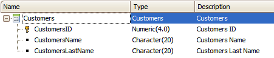
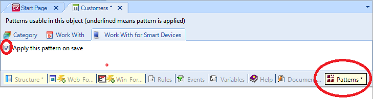
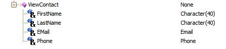
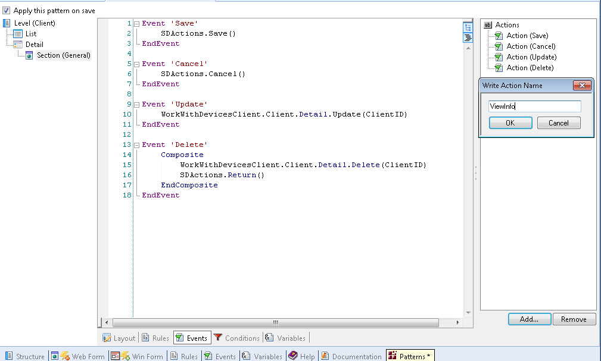
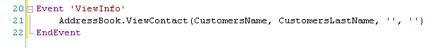
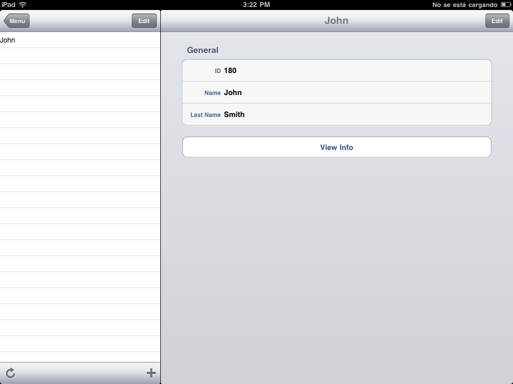
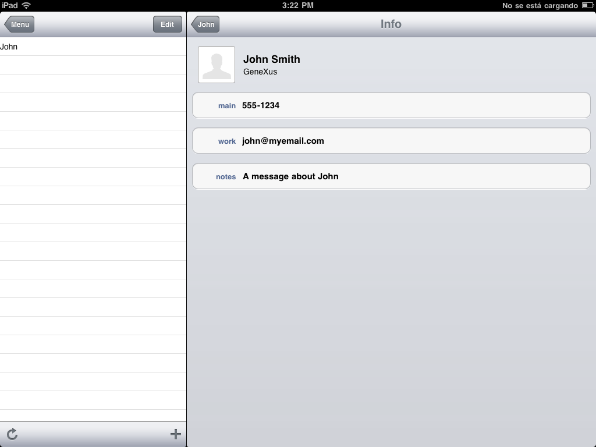

This article will guide you through a simple use of the ViewContact method from Contacts. To do our example we will consider the following Transaction object and apply the Work With for Smart Devices object (WWSD) pattern to it (see about this here: Applying Work With for Smart Devices Pattern).   Let’s assume that you have a list of clients. You have their contact information stored in your devices AddressBook. On the application you just have their name and last name. Through this method you will be able to see the contacts info, stored in your device, in the application. ViewContactThe action ViewContact accepts the following parameters:  Note: First Name and Last Name are mandatory, Email and Phone are optional. To configure the action continue the following steps: Add an action to the Section General to the View Mode of the WWSD.  The event associated to the action should be as follows:  Note: The parameters that are not used must be included in the call of the method anyway. Finally drag and drop your action from the toolbox to the Application Bar. ExamplesiOS 
|
| Backlinks |
| Contacts external object |